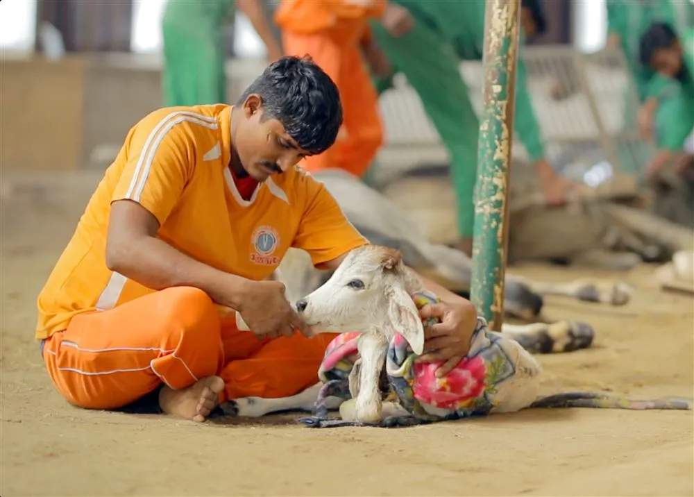
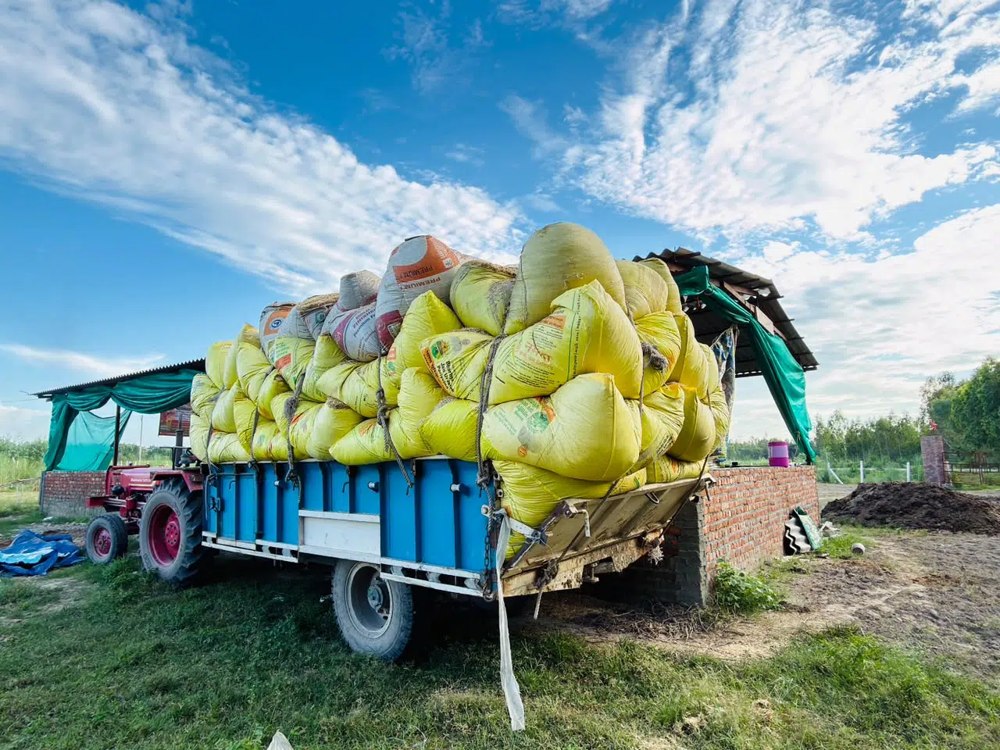
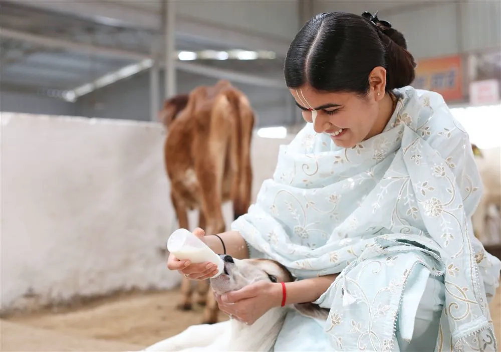
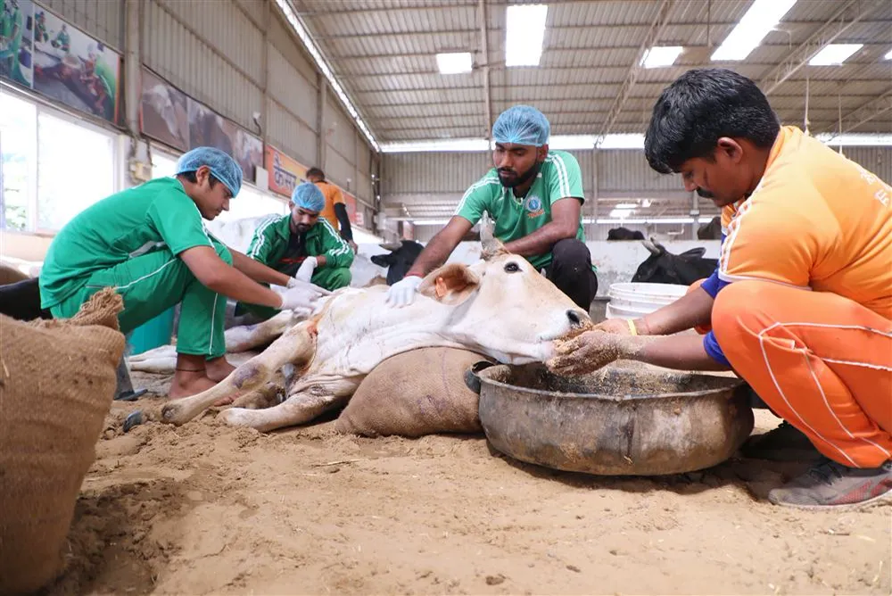
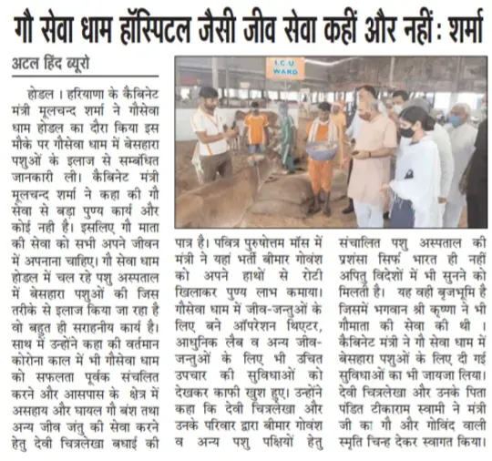
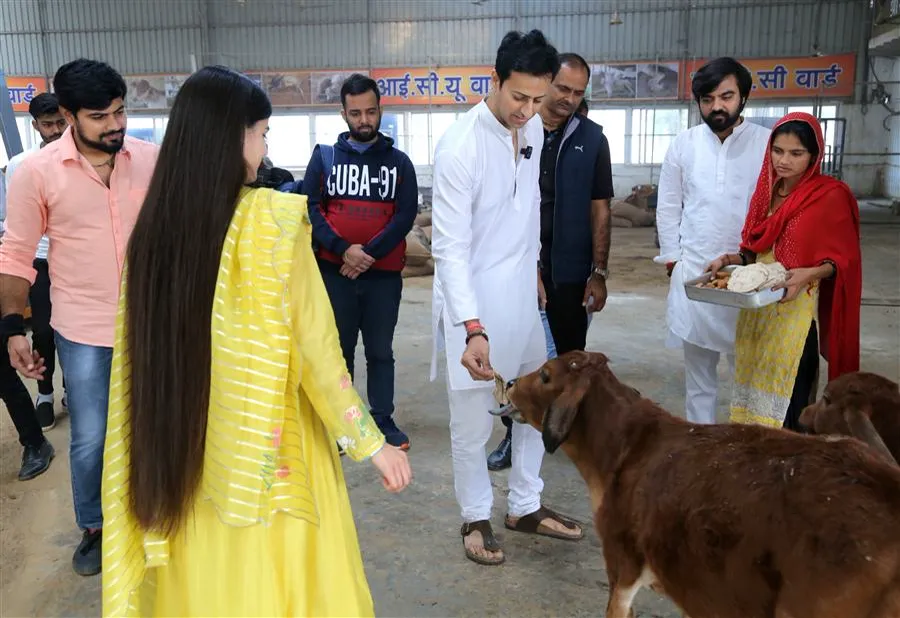
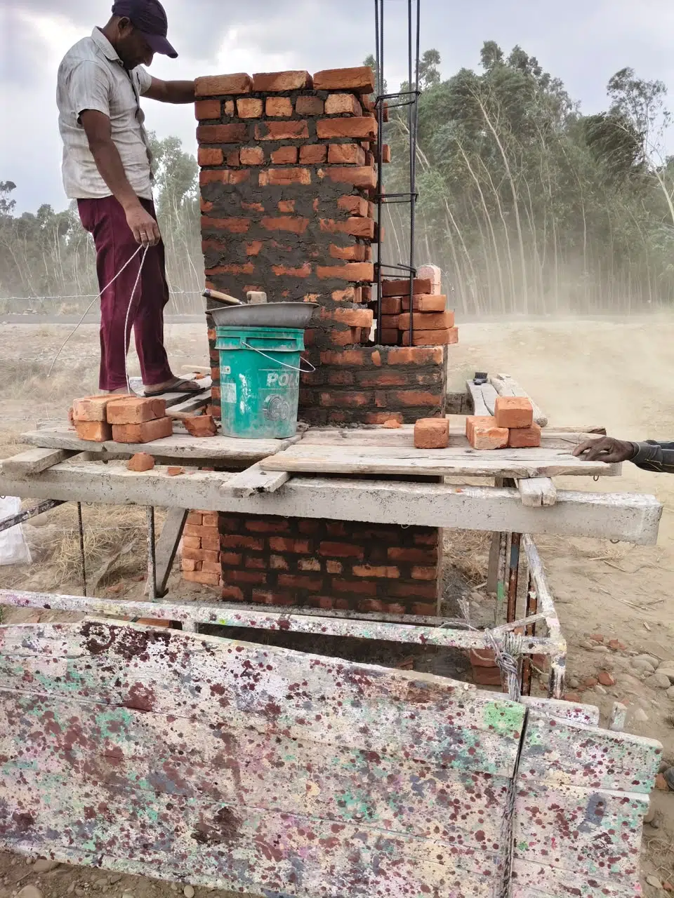
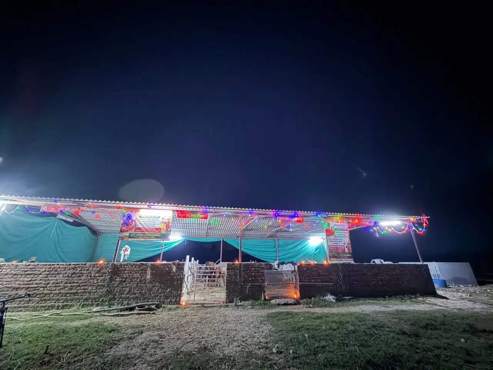

Our Seva Story
At SHREEKRISHNA KANHAIYA GAUSHALA SEWA ASSOCIATION, we believe every Gau Mata deserves love, respect and a life of dignity. From food and shelter to medical care and devotion - we serve every rescued life with compassion, faith and gratitude.










Transform Lives. Serve With Compassion.

Gau Hospital
A dedicated hospital for advanced treatment, research and compassionate care for cows - a legacy of wellness for generations.
Medicine & Nutrition for Sick Cows
Provide life-saving medicines, surgical supplies and green fodder to cows under treatment.

Support Devi Chitralekhaji's Mission
Sustaining rescue, treatment and lifelong shelter care across every ward on campus.

Your Donation. Their Second Chance.
Together, let's build a healthier, kinder tomorrow for every cow.
Voices of Trust & Support

I have seen that cows from thousands of kilometers away have been brought here for treatment. Just like there are big multi-specialty hospitals for the treatment of humans, similarly SHREEKRISHNA KANHAIYA GAUSHALA SEWA ASSOCIATION is India's largest modern veterinary hospital for sick animals.
Seva Spoken By Those Who Stand With Us
I have seen that cows from thousands of kilometers away have been brought here for treatment. Just like there are big multi-specialty hospitals for the treatment of humans, similarly SHREEKRISHNA KANHAIYA GAUSHALA SEWA ASSOCIATION is India's largest modern veterinary hospital for sick animals.


Well-Wishers Who Support Our Seva






Stories That Move
Real moments from SHREEKRISHNA KANHAIYA GAUSHALA SEWA ASSOCIATION, presented as a continuous video journey. The video in the middle plays automatically and the next story moves into the centre when it ends.
Gau Hospital
Day 3 - Work in Progress

Rescue and Recovery at SHREEKRISHNA KANHAIYA GAUSHALA SEWA ASSOCIATION
Gau Mata Eats, But We Feed Her Plastic